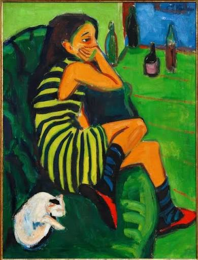
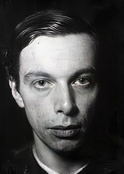
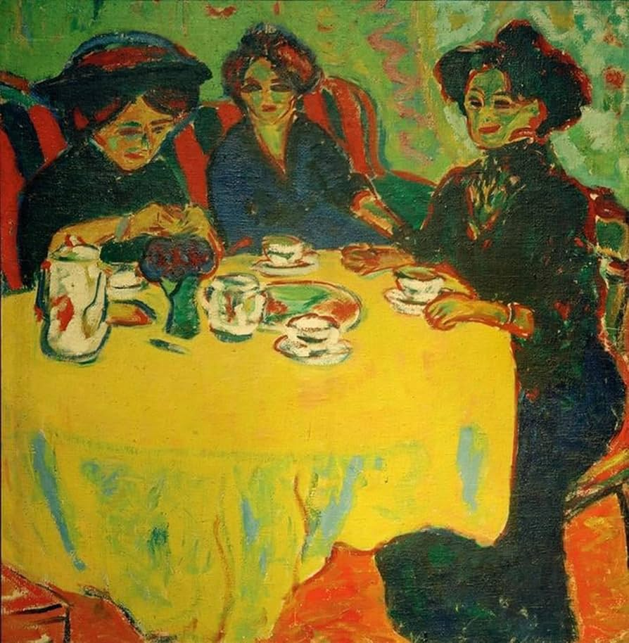

Marcella
ARTISTA EM DESTAQUE
Caminhos da Arte
Ernst Ludwig Kirchner (1880–1938) foi um pintor alemão e um dos fundadores do grupo Die Brücke, criado em 1905. Suas pinturas mostram a vida moderna, especialmente ruas movimentadas, com cores fortes, formas angulosas e figuras estilizadas. Ele queria expressar a tensão e a energia da sociedade urbana, e não apenas copiar o que via.
Ver outras obras ↓
Rua de Berlim
Obra em destaque
LEITURA DA OBRA
Em “Rua de Berlim”, a multidão, as figuras alongadas e as cores contrastantes criam uma sensação de agitação. A cena urbana parece desconfortável e acelerada, mostrando como a cidade moderna podia provocar fascínio e ansiedade.
CONHEÇA QUEM CRIOU
Ernst Ludwig Kirchner (1880–1938) foi um pintor alemão e um dos fundadores do grupo Die Brücke, criado em 1905. Suas pinturas mostram a vida moderna, especialmente ruas movimentadas, com cores fortes, formas angulosas e figuras estilizadas. Ele queria expressar a tensão e a energia da sociedade urbana, e não apenas copiar o que via.

MAIS PARA EXPLORAR

Marcella

O café de Jardim

O rio Elisabeth vermelho em Berlim